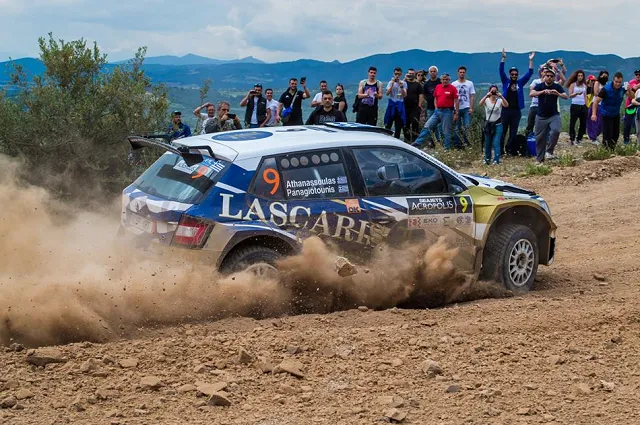
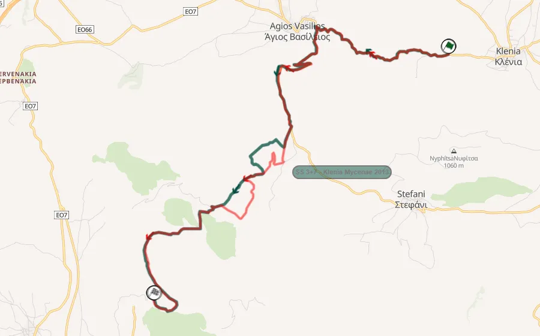
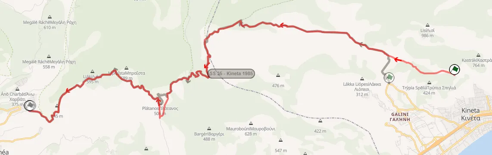
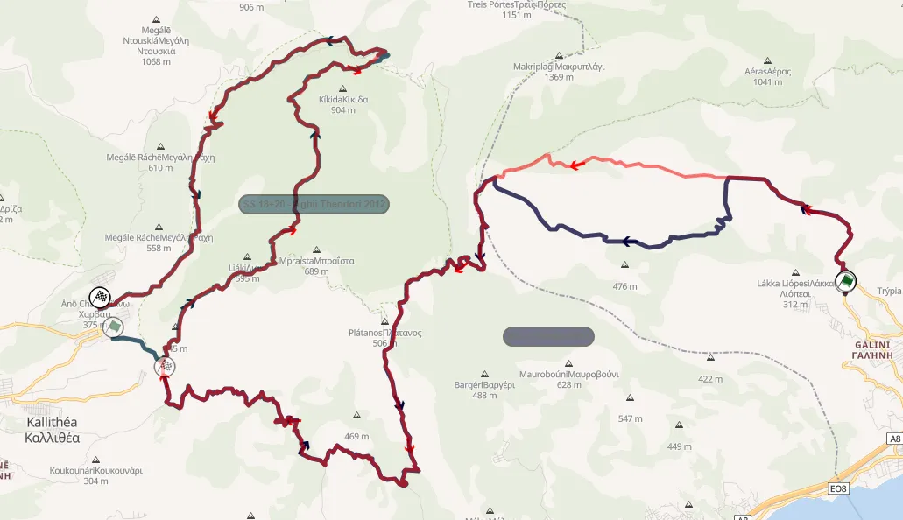
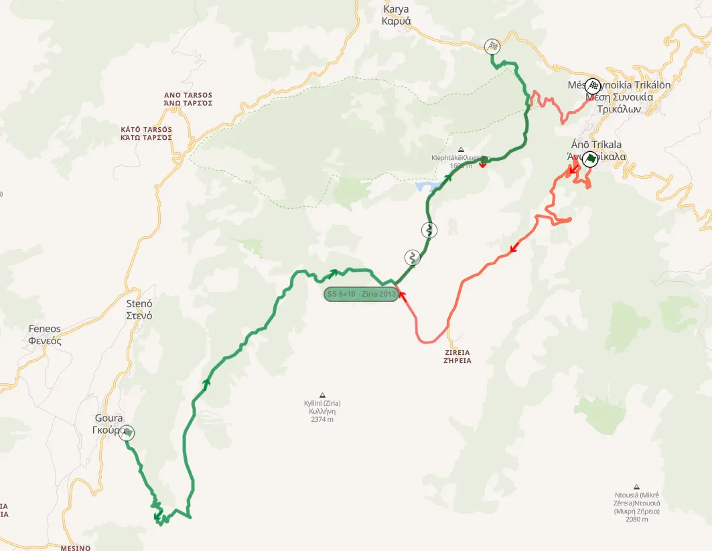
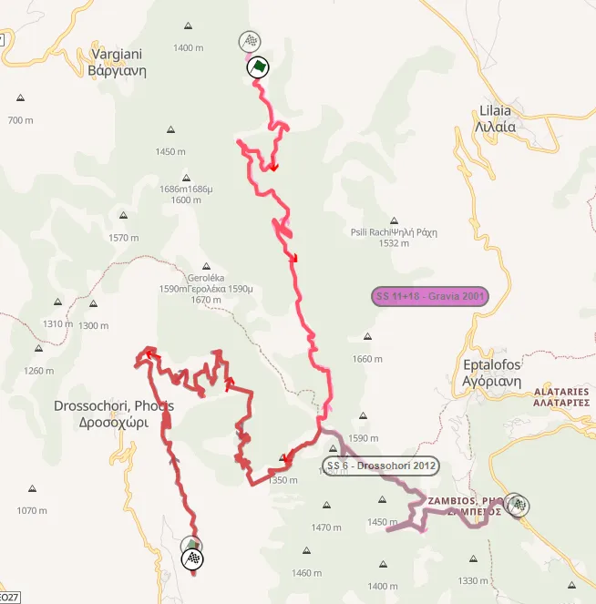
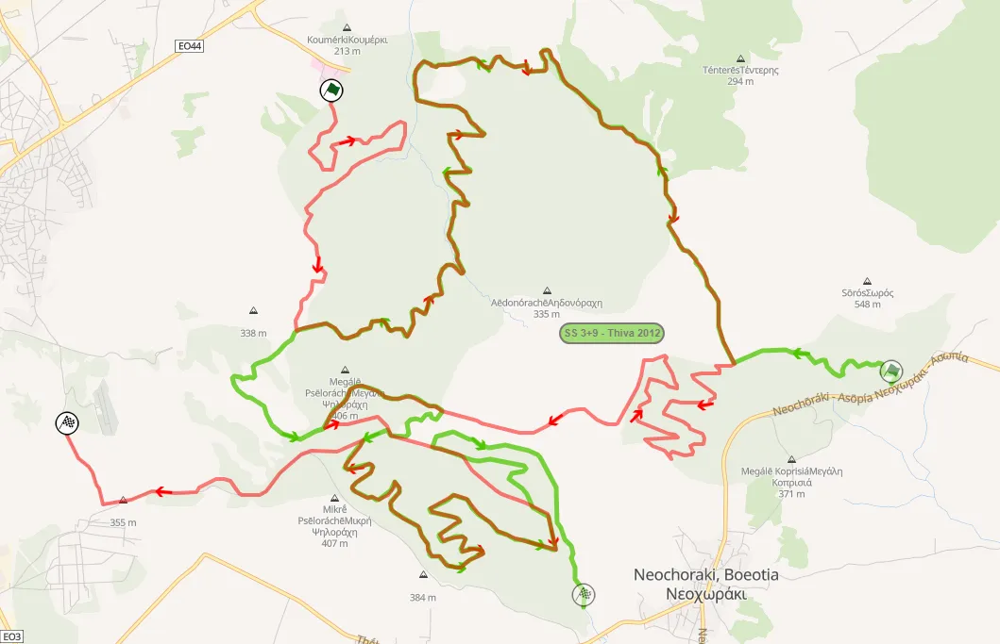

Route History of the Acropolis Rally Part 5.5: 2014-2018
Τhumbnail: Zenor Designs
Maps: Rally-Maps.com
The Acropolis Rally would be absent from the WRC for the latter part of the 2010s, instead being run as a round of the European Rally Championship. In this time period, the event had no stability when it came to dates and headquarters, and kept facing financial issues.
2014: Mixed Surface Experiment
Following the event's failure to appear in the 2014 WRC championship, the rally's organisers were able to secure a slot in the following season's ERC calendar, with the Acropolis being held in March for the first time, and in a mixed surface format. The competitive section of the 238.84km event spanned two days, with the first one being on a full tarmac surface, and the second one being on gravel. The rally's base would still be in Loutraki, with the stages on Sunday being tests used in the rally in one way or another in 2013.
The reason why the event was turned onto a mixed-surface one for 2014, was because that was what then promoter of the ERC, Eurosport, wished.
The rally started on Friday, with a Qualifying stage on tarmac, near the Service Park, which was obviously brand new. It was fast and flowing, on a mostly worn surface.
The rally proper kicked off on Saturday, with two loops of three tarmac stages in the Peloponnese. SS1/4 Agios Ioannis actually had part of it's route used in the rally before, with its start being part of SS Galataki in the 1991 edition of the event. It started off with a technical section on a broken surface next to fields, and then climbed uphill, with high-speed sections. A twisty section of hairpins followed, after which the stage crossed through the village of Agios Ioannis, later becoming fast and wide again, on a smoother surface. The end of the stage was after another series of hairpins - this time downhill, and another high speed section. The last corner of the stage was actually just after a hairpin, which caused some moments for the drivers.
SS 2/5 Aghionori was a lot less interesting, with even more high-speed sections. The first ten kilometers of the test were flat-out almost everywhere, on a mostly wide road. After the stage passed through the village of Agionori, it became more technical, heading downhill, still on a wide road. The second pass of the test had an average speed of 125km/h from stage winner Bryan Bouffier.
SS3/6 Psari, was the most interesting of the tarmac stages in my opinion. It was a lot more technical, with many twisty and sinuous sections, while also still being quite fast in sections, also having a village crossing at about 11.5km.
The rally switched to gravel on Sunday. SS 7/11 Klenia was almost identical to the version of the stage used in 2013. The only change was the inclusion of some tarmac sections instead of very rough and narrow roads used to service farmer fields in the middle of the stage.

2014's SS Klenia (red) compared to the 2013 Klenia - Mycenae (green)
SS8/12 Nea Kineta, was another version of Kineta, which was actually very similar to the one used in 1985. It had a new start, with the stage then continued onto the fast and wide road with crests that the stage is known for, before continuing onto a twisty and rough road. The test then continued on another wide and less rough road, which featured nice flowing cambered turns.
SS 9/13 Loutraki was another version of Pissia, using the 2008 route in reverse. It started on an uphill road which was quite rough and then joined the Pissia road at 6km, and became very twisty at the end.

2014's SS Nea Kineta (red) compared to the 1985 Kineta (gray)
There was also a new SSS in Corinth, which was... an eyesore for anyone who watched on TV.
The rally concluded following another pass through the three gravel stages. Craig Breen won the event, securing a victory for the Peugeot 208 T16 R5 on its debut. The event would go back to full-gravel for 2015.
2015: Back to gravel, but in October
Despite promises and aspirations of a WRC return for 2015, the event would continue to be part of the ERC calendar. The rally would be held in October, something which had never happened before. In consecutive years, the Acropolis Rally was held at both its earliest and latest ever dates. The event was still held in Loutraki, and had an itinerary which closely resembled that of 2013, while only having 9 competitive stages.
Following the Qualifying stage on Saturday, which was the same as 2013, there were just two stages, but both were quite long in terms of distance. SS1 Kineta - Loutraki was a different version of the 2013 Kineta - Pissia stage. The 43km stage, was a combination of the Kineta night stage from 2013, and the 2011 Aghii Theodori stage. Starting from Kineta, it continued down the tarmac road, and then joined the very twisty and sinuous Loutraki road, before climbing uphill on a path which is initially flowing, but then becomes rough and sinuous. The end was rough and fast, heading downhill. SS2 Kineta was a carbon copy of the 2013 test, and was again a night stage, using the first part of the previous test.

The route of the 2015 Kineta - Loutraki test
Sunday would have a total of 7 stages, three of which were run twice. SS Athikia was new, and was mostly on tarmac, and used the ending of 2014 Aghios Ioannis test, in reverse. After a very tight hairpin at 8km, the route turned right and then made it onto gravel. That road was quite rough, even more so due to the torrential rain, and was mostly fast. The end of the test was again on tarmac.
SS Klenia - Mycenae was extended slightly compared to 2014 to have a new tarmac finish, with SS Kefalari returning for 2015, in a route almost identical to 2013, with a new finish.
SS Ziria, the only one pass stage of the day, was another returning stage from 2013. It featured an all new start on tarmac which was initially twisty, but then became wide and flat-out, before joining the fast and flowing old test at 11.3km.

SS Ziria (red) compared to the 2013 stage (green)
The last loop of the rally was cancelled due to torrential rain, which made the stages inaccessible to helicopters and ambulances. Rain was always a possibility with the late slot, and the whole rally was a mudfest.
2016-17: Back to Lamia
For the first time since 2005, the Acropolis Rally returned to Lamia for the 2016 edition of the event. The event's itinerary would feature a return to some classic stages, and would feature 12 stages across two days. The rally would be in a more reasonable slot of early May.
The opening stage of the rally, SS1/4 New Gravia featured a mix of sections previously used as part of Drosohori. More specifically, it saw the route of the 2012 SS Drosohori stage, and the old Gravia stage from 2001, joined together, and run in reverse. The start of the test was quite rough and narrow, then becoming very twisty and technical as the stage headed downhill.

SS New Gravia (red) compared to the 2012 Droshohori stage (white) and the 2001 Gravia test (pink)
SS2/5 Amfissa was the same as 2005 - essentially just the Prosilio road after the tarmac, a road used many many times in the rally before as part of Bauxites or Karoutes. SS3/6 Paleohori used the uphill road full of hairpins from Paleohori to Eleftherohori, and then continued to the Eleftheorohori route in reverse, with the finish just before the village.
Sunday again featured two loops of three repeated stages. The opening stage was SS7/10 Eleftherohori. The classic stage returned to the rally's itinerary for the first time since 2011, in an identical route. It used the last few kilometers of the Paleohori test in reverse, meaning that an 8.3km stretch was used a total of four times in the rally.
Next was another Acropolis classic, SS8/11 Rengini, again in the same configuration as 2011. The test featured a bit of everything, with a mix of rougher and smoother roads, first climbing uphill in a twisty and sinuous section, before then heading downhill. The stage also included the "Nera" watersplash.
SS9/12 Elatia - Karya was another stage closely resembling its 2011 counterpart, with a slightly different finish, with the test being identical to the 2003 Elatia - Zeli. At close to 34km, this was the longest stage of the event, and featured a mix of roads with different characteristics, including the smooth, uphill climb from Elatia to Zeli, the rougher narrow parts from Zeli, and the uphill Karya finish.
The rally would retain an identical itinerary for 2017. The only difference was the date - with the 2017 edition being held in early June.
2018: Ceremonial Start is moved to Athens
For 2018, the itinerary would change, as the rally's ceremonial start was moved to Athens, under the Acropolis. This was the first time that the cars would take the start from the Acropolis since 2012. The crews would then make their way to Marcopoulo for a twin-car SSS in the Hippodrome - something which had also happened in 2007. The day would come to an end after SS2 Thiva, which returned to the itinerary after a six-year absence, in a new configuration, exceeding the 30km mark. As ever it featured a mix of roads with different characteristics, with rough and slow sections, as well as faster and smoother ones mostly near the finish. The 2018 version of the stage, used sections commonly used in previous years, but in reverse.

The new look Thiva stage for 2018
Saturday started from SS3/7 New Amfissa, which was Amfissa from 2016/17, only in reverse, starting from Prosilio and finishing in the tarmac road before Bauxites. SS4/8 Drosohori was next, and it was just Gravia from 2016/17, but in reverse, similarly to the loop's opener. The day concluded after a pass of SS5/9 Paleohori, which used the Paleohori start, and Eleftherohori's finish, something that had been last used in 2002.
The last day of the rally had two repeated stages. SS9/11 Grameni returned to the itinerary for the first time since 2005, in a similar route, with the only difference being a new twisty section from 7 to 10km. It featured a mix of fast sections, as well as slower and more technical ones, with a jump near the start, as well as three consecutive crest just before the finish, in a more high-speed section.
SS10/12 Divri was new for this event, a stage that had been previously used as part of the Fthiotidos Rally. It was mostly fast, with the first kilometers being uphill on a twisty section, with a more high-speed one following. The end of the stage was fast and technical, heading downhill.
The rally would not be held for 2019 and 2020 due to a lack of funds, failing to secure a slot in the European Rally Championship, nevermind the WRC, which was always a target.


Comments